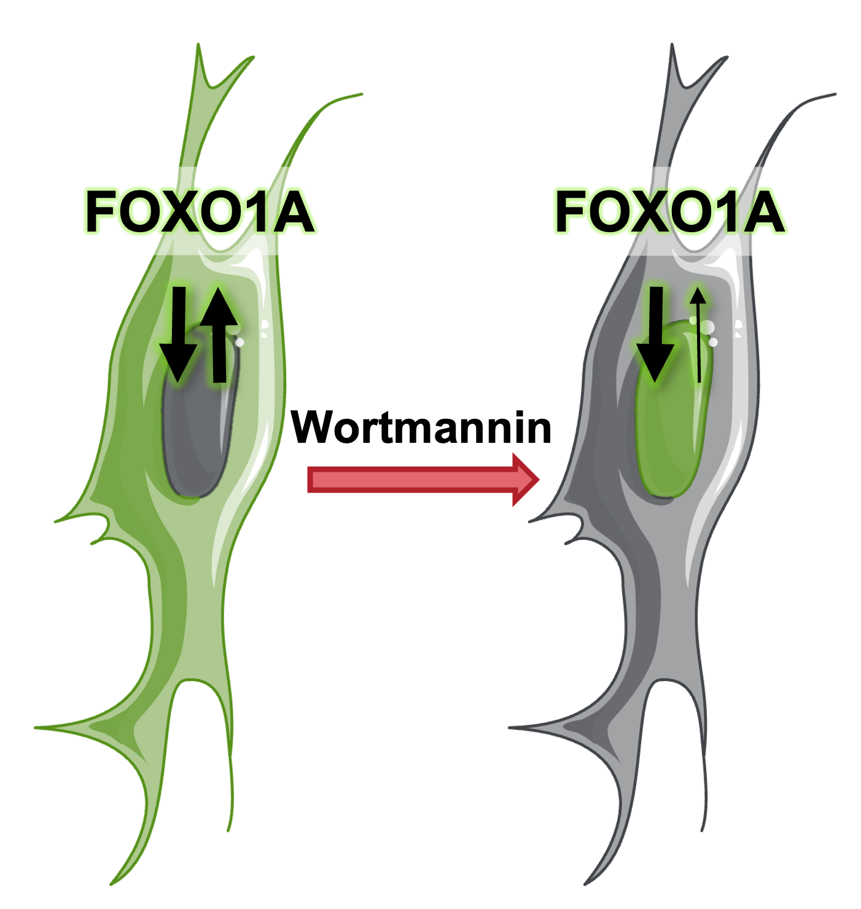
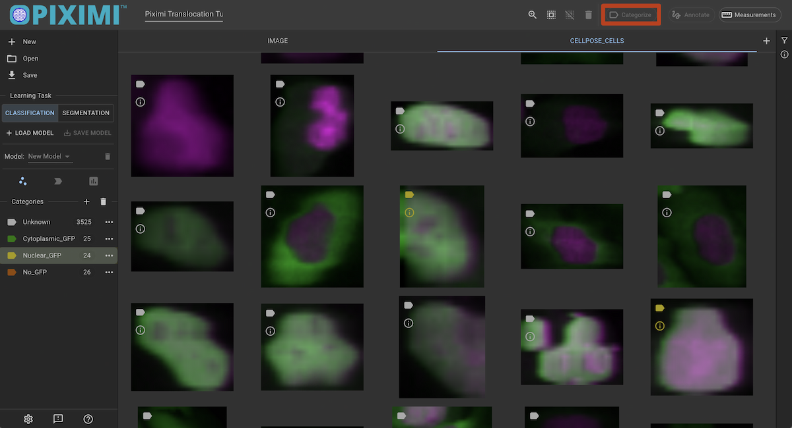
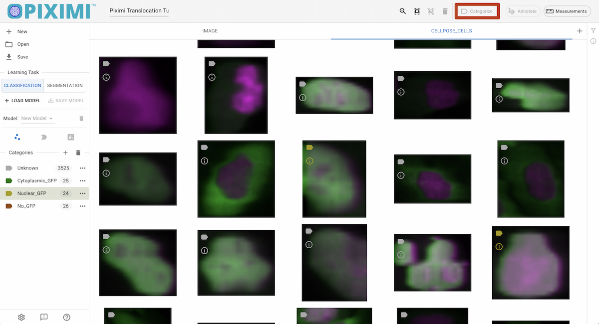
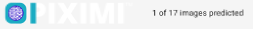

Tutorial Para Iniciantes do Piximi (Portugues)#
Segmentação e classificação sem instalação no navegador
Beth Cimini, Le Liu, Esteban Miglietta, Paula Llanos, Nodar Gogoberidze
Instituto Broad do MIT e Harvard, Cambridge, MA.
Informações básicas:#
O que é Piximi?#
Piximi é uma ferramenta moderna de análise de imagens sem programação que utiliza aprendizado profundo. Implementado como um aplicativo web em https://piximi.app/, o Piximi não requer instalação e pode ser acessado por qualquer navegador moderno. Sua arquitetura exclusiva para clientes preserva a segurança dos dados do pesquisador, executando toda a computação localmente.
O Piximi é interoperável com ferramentas e fluxos de trabalho existentes, suportando importação e exportação de dados e formatos de modelos comuns. A interface intuitiva e o fácil acesso ao Piximi permitem que pesquisadores obtenham insights sobre imagens em apenas alguns minutos. O Piximi visa levar a análise de imagens com aprendizado profundo a uma comunidade mais ampla, eliminando barreiras.
* exceto as segmentações usando Cellpose, que são enviadas para um servidor remoto (com a permissão do usuário).
Funcionalidades principais: Anotador, Segmentador, Classificador, Medições.
Objetivo do exercício#
Neste exercício, você se familiarizará com as principais funcionalidades do Piximi: anotação, segmentação, classificação, mensuração e visualização, e o utilizará para analisar um conjunto de imagens de um experimento de translocação. O objetivo deste experimento é determinar a menor dose efetiva de Wortmannin necessária para induzir a localização nuclear de FOXO1A marcada com GFP (Figura 1). Você segmentará as imagens usando um dos modelos de aprendizado profundo disponíveis no Piximi, verificará e selecionará a segmentação e, em seguida, treinará um classificador de imagens para classificar as células individuais como tendo “GFP nuclear”, “GFP citoplasmática” ou “sem GFP”. Por fim, você fará medições e as plotará para responder à pergunta biológica.
Contexto do experimento#
Neste experimento, pesquisadores obtiveram imagens de células U2OS de osteossarcoma (câncer ósseo) fixadas expressando uma proteína de fusão FOXO1A-GFP e coraram DAPI para marcar os núcleos. FOXO1 é um fator de transcrição que desempenha um papel fundamental na regulação da gliconeogênese e glicogenólise por meio da sinalização da insulina. FOXO1A transita dinamicamente entre o citoplasma e o núcleo em resposta a vários estímulos. A wortmanina, um inibidor da PI3K, pode bloquear a exportação nuclear, resultando no acúmulo de FOXO1A no núcleo.
{kind=link}

Schematic representation of FOXO1A mechanism
Materiais necessários para este exercício#
Os materiais necessários para este exercício podem ser baixados de: PiximiTutorial. O arquivo “Piximi Translocation Tutorial RGB.zip” contém um projeto Piximi, incluindo todas as imagens, já rotuladas com o tratamento correspondente (concentração de Wortmannin ou Controle). Baixe este arquivo, mas NÃO o descompacte!
Instruções do exercício#
Leia os passos abaixo e siga as instruções onde indicado. Os passos em que você precisa encontrar uma solução estão marcados com 🔴 PARA FAZER.
1. Carregue o projeto Piximi#
🔴 PARA FAZER
Inicie o Piximi acessando: https://piximi.app/
Carregue o projeto de exemplo: Clique em “Abrir” - “Projeto” - “Projeto do Zip”, para carregar um arquivo de projeto para este tutorial do Zip. Você também pode alterar o nome do projeto no painel superior esquerdo, como “Exercício Piximi”. Conforme ele é carregado, você pode ver a progressão no logotipo no canto superior esquerdo.
{kind=link}
{kind=link}
{kind=link}
2. Verifique as imagens carregadas e explore a interface do Piximi#
{kind=link}
{kind=link}
Estas 17 imagens representam tratamentos com Wortmannin em oito concentrações diferentes (expressas em nM), bem como tratamentos controles (0 nM). Observe que o canal DAPI (Núcleos) é mostrado em magenta e que o canal GFP (FOXOA1) é mostrado em verde.
Ao passar o mouse sobre a imagem, rótulos coloridos são exibidos no canto esquerdo das imagens. Essas anotações são dos metadados do arquivo compactado que acabamos de enviar. Neste tutorial, os diferentes rótulos coloridos indicam a concentração de Wortmannin, enquanto os números representam o número de imagens em cada categoria.
Opcionalmente, você pode anotar as imagens manualmente clicando em “+ Categoria”, inserindo seu rótulo e, em seguida, selecionando a imagem clicando nas imagens e anotando as imagens selecionadas clicando em “Categorizar”. Neste tutorial, pularemos esta etapa, pois os rótulos já foram carregados no início. Mais informações podem ser encontradas na seção Project Viewer dos documentos.
3. Segmentar Células - descubra as células a partir do fundo#
🔴 PARA FAZER
Para iniciar a previsão em todas as imagens, clique em “Selecionar Todas as Imagens” no painel superior.
{kind=link}
{kind=link}
Altere a Tarefa de Aprendizagem para “SEGMENTAÇÃO”.
{kind=link}
{kind=link}
Clique em “+ CARREGAR MODELO” e a janela será exibida, permitindo que você escolha um modelo pré-treinado.
{kind=link}
{kind=link}
Para o exercício de hoje, selecione “Cellpose”. Mais informações sobre o modelo suportado podem ser encontradas aqui. Clique em “Abrir Modelo de Segmentação” para carregar seu modelo e selecioná-lo.
{kind=link}
{kind=link}
Por fim, clique em “Prever Modelo”. Você verá o progresso da previsão exibido no canto superior esquerdo, abaixo do logotipo da Piximi. A segmentação levará alguns minutos para ser concluída.
{kind=link}
{kind=link}
Observe que as etapas anteriores foram executadas em sua máquina local, o que significa que suas imagens estão armazenadas localmente. No entanto, a inferência do Cellpose é executada na nuvem, o que significa que suas imagens serão enviadas para processamento. Se suas imagens forem altamente sensíveis, tenha cuidado ao usar serviços baseados em nuvem.
4. Visualize o resultado da segmentação e corrija os erros de segmentação#
🔴 PARA FAZER
Clique na aba CELLPOSE_CELLS para verificar as células individuais que foram segmentadas. Selecione alguns objetos identificados ou imagens inteiras e clique em “Anotar” na barra superior para visualizá-los no ImageViewer.
{kind=link}
{kind=link}
Opcionalmente, aqui você pode refinar manualmente a segmentação usando as ferramentas do anotador. O anotador Piximi oferece diversas opções para adicionar, subtrair ou interseccionar anotações. Além disso, a ferramenta de seleção permite redimensionar ou excluir anotações específicas. Para começar a editar, selecione imagens específicas ou todas clicando na caixa de seleção na parte superior.
Opcionalmente, você pode ajustar os canais: embora existam dois canais neste experimento, o sinal dos núcleos é duplicado nos canais vermelho e verde. Este projeto foi projetado para ser compatível com daltonismo e produzir uma cor magenta para os núcleos. O canal verde também inclui sinais citoplasmáticos.
Outro motivo para duplicar os canais é que alguns modelos — como o modelo Cellpose que usamos hoje — exigem uma entrada de três canais.
Você pode optar por segmentar manualmente as células para gerar máscaras para dados de verdade básica.
Classificar células#
Motivo para isso: Queremos classificar as ‘CELLPOSE_CELLS’ com base na distribuição de GFP (em núcleos, citoplasma ou sem GFP) sem rotular todas elas manualmente. Para isso, podemos usar a função de classificação do Piximi, que nos permite treinar um classificador usando um pequeno subconjunto de dados rotulados e, em seguida, classificar automaticamente as células restantes.
🔴 PARA FAZER
Acesse a aba CELLPOSE_CELLS que exibe os objetos segmentados.
{kind=link}
{kind=link}
Clique na aba Classificação no painel esquerdo.
{kind=link}
{kind=link}
Crie novas categorias clicando em “+ Categoria”. Adicione as três categorias “Cytoplasmatic_GFP”, “Nuclear_GFP” e “No_GFP”.
{kind=link}
{kind=link}
Clique nas imagens que correspondem aos seus critérios. Você pode selecionar várias células pressionando Command (⌘) no Mac ou Shift no Linux. Tente atribuir ~20–40 células por categoria. Após selecionar, clique em “Categorizar” para atribuir os rótulos às células selecionadas.
{kind=link}

{kind=link}

Classificação de células individuais com base na presença e localização de GFP.
6. Treine o modelo do Classificador#
🔴 PARA FAZER
Clique no ícone “
 - Ajustar Modelo” para abrir as configurações de hiperparâmetros do modelo. Para o exercício de hoje, ajustaremos alguns parâmetros:
- Ajustar Modelo” para abrir as configurações de hiperparâmetros do modelo. Para o exercício de hoje, ajustaremos alguns parâmetros:Clique em “Configurações de arquitetura” e defina a arquitetura do modelo como SimpleCNN.
Atualize as dimensões de entrada para:
Linhas de entrada: 48
Colunas de entrada: 48
Canais: 3 (já que nossas imagens estão no formato RGB)
(Você pode mudar para outros números, como 64, 128)
Na seção “Particionamento de Dados”, defina a Porcentagem de Treinamento como 0,75, o que reserva 25% dos dados rotulados para validação.
{kind=link}
{kind=link}
Ao clicar em “Ajustar Classificador” no Piximi, dois gráficos de treinamento aparecerão: “Precisão vs. Épocas” e “Perda vs. Épocas”. Cada gráfico mostra curvas para os dados de treinamento e validação.
{kind=link}
{kind=link}
No gráfico de precisão, você verá o quão bem o modelo está aprendendo. Idealmente, a precisão tanto do treinamento quanto da validação deve aumentar e permanecer próxima.
No gráfico de perdas, valores menores significam melhor desempenho. Se a perda de validação começar a aumentar enquanto a perda de treinamento continua caindo, o modelo pode estar com sobreajuste.
Esses gráficos ajudam a entender como o modelo está aprendendo e se ajustes são necessários.
7. Avaliar modelo:#
🔴 A FAZER
{kind=link}
{kind=link}
Clique em “Prever Modelo” para aplicar o modelo que acabamos de treinar. Esta etapa gerará previsões nas células que não anotamos.
{kind=link}
{kind=link}
Você pode revisar as previsões na guia CELLPOSE_CELLS e excluir quaisquer categorias atribuídas incorretamente.
Opcionalmente, você pode continuar usando os rótulos para refinar a verdade básica e aprimorar o classificador. Esse processo faz parte da classificação humana no ciclo, na qual você corrige e treina o modelo iterativamente com base na entrada humana.
Clique em “Avaliar Modelo” para avaliar o modelo que acabamos de treinar. As métricas de confusão e de avaliação podem ser comparadas com a verdade básica.
Clique em “Aceitar previsão (Manter)” para atribuir os rótulos previstos a todos os objetos.
{kind=link}
{kind=link}
8. Medição#
Assim que estiver satisfeito com a classificação, prosseguiremos com a medição dos objetos. O objetivo do exercício de hoje é determinar a concentração mínima de Wortmannin necessária para bloquear a exportação de FOXO1A-GFP dos núcleos. Para isso, podemos medir a intensidade total de GFP na imagem ou no objeto.
🔴 PARA FAZER
Clique em “Medição” no canto superior direito.
{kind=link}
{kind=link}
Clique em “+” ao lado de «Tabelas» e selecione «Imagem» e clique em «Confirmar». Observação: a preparação dos dados para a etapa de medição pode levar algum tempo para ser processada.
{kind=link}
{kind=link}
Clique em “Categoria” para incluir todas as categorias na medição.
Em “Total”, clique em “Canal 1” para selecionar a medição para GFP. Você verá a medição na aba “GRADE DE DADOS”. As medições são apresentadas como valores médios ou medianos, e o conjunto de dados completo está disponível ao exportar o arquivo .csv.
{kind=link}
{kind=link}
9. Visualização#
Após gerar as medições, você pode plotá-las.
🔴 PARA FAZER
Clique em “PLOTS” para visualizar as medições.
{kind=link}
{kind=link}
Defina o tipo de gráfico como “Swarm” e escolha um tema de cores de acordo com sua preferência.
Selecione “Y-axis” como “intensity-total-channel-1” e defina “SwarmGroup” como “category”; isso gerará uma curva mostrando como a intensidade da GFP varia entre as diferentes categorias.
Selecionar “Show Statistics” exibirá a média, bem como os limites de confiança superior e inferior, no gráfico.
Opcionalmente, você pode experimentar diferentes tipos de gráfico e eixos para ver se os dados revelam insights adicionais.
{kind=link}
{kind=link}
10. Exportar resultados e salvar o projeto#
🔴 PARA FAZER
Clique em “SALVAR” no canto superior esquerdo para salvar o projeto inteiro. Você verá a animação do logotipo do Piximi conforme o salvamento avança

.
{kind=link}
11. Informações de apoio#
Confira o artigo do Piximi: https://www.biorxiv.org/content/10.1101/2024.06.03.597232v2
Confira a documentação do Piximi:Documentação do Piximi:https://documentation.piximi.app/intro.html
Relatar bugs/erros ou solicitar recursos piximi/documentation#issues